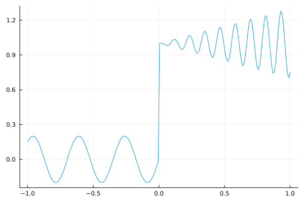
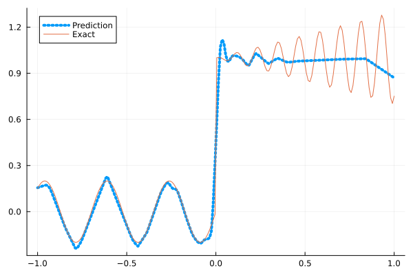
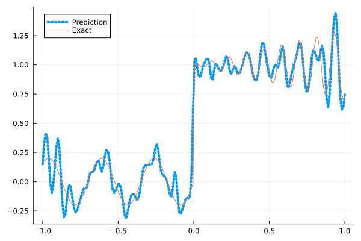
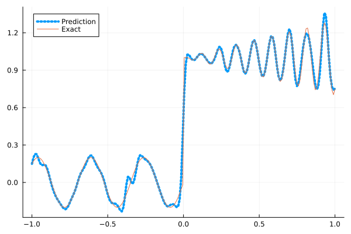
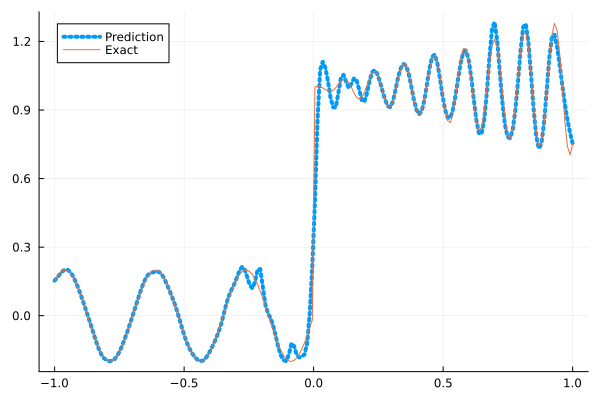

Fitting a nonlinear discontinuous function
This example is taken from here. However, we do not use adaptive activation functions. Instead, we show that using suitable non-parametric activation functions immediately performs better.
Consider the following discontinuous function with discontinuity at $x=0$:
\[u(x)= \begin{cases}0.2 \sin (18 x) & \text { if } x \leq 0 \\ 1+0.3 x \cos (54 x) & \text { otherwise }\end{cases}\]
The domain is $[-1,1]$. The number of training points used is 50.
Import pacakges
using Lux, Sophon
using NNlib, Optimisers, Plots, Random, StatsBase, ZygoteDataset
function u(x)
if x <= 0
return 0.2 * sin(18 * x)
else
return 1 + 0.3 * x * cos(54 * x)
end
end
function generate_data(n=50)
x = reshape(collect(range(-1.0f0, 1.0f0, n)), (1, n))
y = u.(x)
return (x, y)
endgenerate_data (generic function with 2 methods)Let's visualize the data.
x_train, y_train = generate_data(50)
x_test, y_test = generate_data(200)
Plots.plot(vec(x_test), vec(y_test),label=false)
Naive Neural Nets
First we demonstrate show naive fully connected neural nets could be really bad at fitting this function.
model = FullyConnected((1,50,50,50,50,1), relu)Chain(
layer_1 = Dense(1 => 50, relu), # 100 parameters
layer_2 = Dense(50 => 50, relu), # 2_550 parameters
layer_3 = Dense(50 => 50, relu), # 2_550 parameters
layer_4 = Dense(50 => 50, relu), # 2_550 parameters
layer_5 = Dense(50 => 1), # 51 parameters
) # Total: 7_801 parameters,
# plus 0 states, summarysize 80 bytes.Train the model
function train(model, x, y)
ps, st = Lux.setup(Random.default_rng(), model)
opt = Adam()
st_opt = Optimisers.setup(opt,ps)
function loss(model, ps, st, x, y)
y_pred, _ = model(x, ps, st)
mes = mean(abs2, y_pred .- y)
return mes
end
for i in 1:2000
gs = gradient(p->loss(model,p,st,x,y), ps)[1]
st_opt, ps = Optimisers.update(st_opt, ps, gs)
if i % 100 == 1 || i == 2000
println("Epoch $i || ", loss(model,ps,st,x,y))
end
end
return ps, st
endtrain (generic function with 1 method)Plot the result
@time ps, st = train(model, x_train, y_train)
y_pred = model(x_test,ps,st)[1]
Plots.plot(vec(x_test), vec(y_pred),label="Prediction",line = (:dot, 4))
Plots.plot!(vec(x_test), vec(y_test),label="Exact",legend=:topleft)Epoch 1 || 0.322839642663652
Epoch 101 || 0.016642002086630726
Epoch 201 || 0.0156189630256228
Epoch 301 || 0.014997184372147539
Epoch 401 || 0.013485592578247689
Epoch 501 || 0.0127200998566328
Epoch 601 || 0.011641950515189778
Epoch 701 || 0.010115140613541167
Epoch 801 || 0.008571917132658854
Epoch 901 || 0.007818850792083897
Epoch 1001 || 0.0073723279713143715
Epoch 1101 || 0.00728439472943734
Epoch 1201 || 0.007290833326825356
Epoch 1301 || 0.007199582344531696
Epoch 1401 || 0.007378702529914933
Epoch 1501 || 0.007280846462719001
Epoch 1601 || 0.0071162320339344335
Epoch 1701 || 0.007181297173181198
Epoch 1801 || 0.007161005619494465
Epoch 1901 || 0.007154937836728727
Epoch 2000 || 0.007291728250446727
9.677265 seconds (13.15 M allocations: 1.483 GiB, 3.46% gc time, 92.55% compilation time)
Siren
We use four hidden layers with 50 neurons in each.
model = Siren(1,50,50,50,50,1; omega = 30f0)Chain(
layer_1 = Dense(1 => 50, sin), # 100 parameters
layer_2 = Dense(50 => 50, sin), # 2_550 parameters
layer_3 = Dense(50 => 50, sin), # 2_550 parameters
layer_4 = Dense(50 => 50, sin), # 2_550 parameters
layer_5 = Dense(50 => 1), # 51 parameters
) # Total: 7_801 parameters,
# plus 0 states, summarysize 88 bytes.@time ps, st = train(model, x_train, y_train)
y_pred = model(x_test,ps,st)[1]
Plots.plot(vec(x_test), vec(y_pred),label="Prediction",line = (:dot, 4))
Plots.plot!(vec(x_test), vec(y_test),label="Exact",legend=:topleft)Epoch 1 || 0.8756413937972443
Epoch 101 || 0.0009106168285036262
Epoch 201 || 6.643447909780984e-5
Epoch 301 || 2.5397735927477918e-6
Epoch 401 || 5.127024140547475e-8
Epoch 501 || 5.445843440083463e-10
Epoch 601 || 4.468043148839154e-12
Epoch 701 || 2.517833937659863e-13
Epoch 801 || 4.460809431165082e-14
Epoch 901 || 2.047939577981229e-14
Epoch 1001 || 5.2396159920543266e-14
Epoch 1101 || 3.53000332131177e-14
Epoch 1201 || 2.7207334398094508e-14
Epoch 1301 || 2.234772399934895e-14
Epoch 1401 || 3.329709764898749e-14
Epoch 1501 || 4.431362697716644e-14
Epoch 1601 || 2.892085953410536e-14
Epoch 1701 || 5.778214490776812e-14
Epoch 1801 || 3.749225054181414e-14
Epoch 1901 || 6.805194718086765e-14
Epoch 2000 || 4.096626677673418e-14
4.977924 seconds (8.16 M allocations: 1.298 GiB, 4.54% gc time, 83.71% compilation time)
As we can see the model overfits the data, and the high frequencies cannot be optimized away. We need to tunning the hyperparameter omega
model = Siren(1,50,50,50,50,1; omega = 10f0)Chain(
layer_1 = Dense(1 => 50, sin), # 100 parameters
layer_2 = Dense(50 => 50, sin), # 2_550 parameters
layer_3 = Dense(50 => 50, sin), # 2_550 parameters
layer_4 = Dense(50 => 50, sin), # 2_550 parameters
layer_5 = Dense(50 => 1), # 51 parameters
) # Total: 7_801 parameters,
# plus 0 states, summarysize 88 bytes.@time ps, st = train(model, x_train, y_train)
y_pred = model(x_test,ps,st)[1]
Plots.plot(vec(x_test), vec(y_pred),label="Prediction",line = (:dot, 4))
Plots.plot!(vec(x_test), vec(y_test),label="Exact",legend=:topleft)Epoch 1 || 0.2808040107524567
Epoch 101 || 0.0059527254372642655
Epoch 201 || 0.004117823500798182
Epoch 301 || 0.002744499997031457
Epoch 401 || 0.001706439932233651
Epoch 501 || 0.0007373607436475993
Epoch 601 || 0.0002159850827041547
Epoch 701 || 6.945283170587752e-5
Epoch 801 || 6.148097377206168e-5
Epoch 901 || 2.259896445832411e-5
Epoch 1001 || 1.5193460788104547e-5
Epoch 1101 || 1.5722776680407623e-5
Epoch 1201 || 2.3801678335799628e-5
Epoch 1301 || 7.64978552599279e-6
Epoch 1401 || 6.1300348639643204e-6
Epoch 1501 || 5.331938785858139e-5
Epoch 1601 || 5.242106179748776e-5
Epoch 1701 || 2.783030531500725e-6
Epoch 1801 || 7.443290533895274e-5
Epoch 1901 || 1.5415165851526867e-6
Epoch 2000 || 6.4787660156215746e-6
0.627268 seconds (1.15 M allocations: 892.502 MiB, 4.82% gc time)
Gaussian activation function
We can also try using a fully connected net with the gaussian activation function.
model = FullyConnected((1,50,50,50,50,1), gaussian)Chain(
layer_1 = Dense(1 => 50, gaussian), # 100 parameters
layer_2 = Dense(50 => 50, gaussian), # 2_550 parameters
layer_3 = Dense(50 => 50, gaussian), # 2_550 parameters
layer_4 = Dense(50 => 50, gaussian), # 2_550 parameters
layer_5 = Dense(50 => 1), # 51 parameters
) # Total: 7_801 parameters,
# plus 0 states, summarysize 80 bytes.@time ps, st = train(model, x_train, y_train)
y_pred = model(x_test,ps,st)[1]
Plots.plot(vec(x_test), vec(y_pred),label="Prediction",line = (:dot, 4))
Plots.plot!(vec(x_test), vec(y_test),label="Exact",legend=:topleft)Epoch 1 || 0.27811065794955575
Epoch 101 || 0.006089641890388226
Epoch 201 || 0.005404147651450659
Epoch 301 || 0.004447315556109127
Epoch 401 || 0.002080300762863256
Epoch 501 || 0.00012997514941803686
Epoch 601 || 5.639555987994053e-6
Epoch 701 || 2.5165499096845505e-6
Epoch 801 || 3.781304368835176e-6
Epoch 901 || 3.0314264643198385e-5
Epoch 1001 || 8.980419941601919e-7
Epoch 1101 || 1.4466914948806855e-5
Epoch 1201 || 5.476198424928965e-7
Epoch 1301 || 0.0002656739386987584
Epoch 1401 || 3.131459026475683e-7
Epoch 1501 || 1.7857479853199247e-7
Epoch 1601 || 1.822234291729353e-6
Epoch 1701 || 2.5827348707973396e-7
Epoch 1801 || 9.803514445733738e-8
Epoch 1901 || 4.845473424791593e-8
Epoch 2000 || 7.73754829345927e-6
4.735215 seconds (7.29 M allocations: 1.252 GiB, 4.00% gc time, 83.10% compilation time)
Quadratic activation function
quadratic is much cheaper to compute compared to the Gaussain activation function.
model = FullyConnected((1,50,50,50,50,1), quadratic)Chain(
layer_1 = Dense(1 => 50, quadratic), # 100 parameters
layer_2 = Dense(50 => 50, quadratic), # 2_550 parameters
layer_3 = Dense(50 => 50, quadratic), # 2_550 parameters
layer_4 = Dense(50 => 50, quadratic), # 2_550 parameters
layer_5 = Dense(50 => 1), # 51 parameters
) # Total: 7_801 parameters,
# plus 0 states, summarysize 80 bytes.@time ps, st = train(model, x_train, y_train)
y_pred = model(x_test,ps,st)[1]
Plots.plot(vec(x_test), vec(y_pred),label="Prediction",line = (:dot, 4))
Plots.plot!(vec(x_test), vec(y_test),label="Exact",legend=:topleft)Epoch 1 || 0.5091332320410399
Epoch 101 || 0.006712718136037434
Epoch 201 || 0.006057599219119435
Epoch 301 || 0.0054191105201433195
Epoch 401 || 0.004832480798276967
Epoch 501 || 0.00406160394315967
Epoch 601 || 0.002730622357149834
Epoch 701 || 0.0013887787281891561
Epoch 801 || 0.000579924258256182
Epoch 901 || 0.00033185350634690235
Epoch 1001 || 6.126137008993086e-5
Epoch 1101 || 2.1500823300941603e-5
Epoch 1201 || 3.068757962248456e-6
Epoch 1301 || 1.2770382496745387e-5
Epoch 1401 || 1.3092566403796371e-7
Epoch 1501 || 0.0001449715244341305
Epoch 1601 || 5.2888642875398065e-6
Epoch 1701 || 1.9409991688228176e-8
Epoch 1801 || 5.500626196586823e-6
Epoch 1901 || 3.612825391264774e-5
Epoch 2000 || 5.532909647648696e-6
4.296531 seconds (7.04 M allocations: 1.235 GiB, 4.82% gc time, 86.09% compilation time)
Conclusion
"Neural networks suppresse high frequency components" is a misinterpretation of the spectral bias. The accurate way of putting it is that the lower frequencies in the error are optimized first in the optimization process. This can be seen in Siren's example of overfitting data, where you do not have implicit regularization. The high frequency in the network will never go away because it has fitted the data perfectly.
Mainstream attributes the phenomenon that neural networks "suppress" high frequencies to gradient descent. This is not the whole picture. Initialization also plays an important role. Siren mitigats this problem by initializing larger weights in the first layer, while activation functions such as gassian have large enough gradients and sufficiently large support of the second derivative with proper hyperparameters. Please refer to Vincent Sitzmann, Julien Martel, Alexander Bergman, David Lindell, Gordon Wetzstein (2020), Sameera Ramasinghe, Simon Lucey (2021) and Sameera Ramasinghe, Lachlan MacDonald, Simon Lucey (2022) if you want to dive deeper into this.